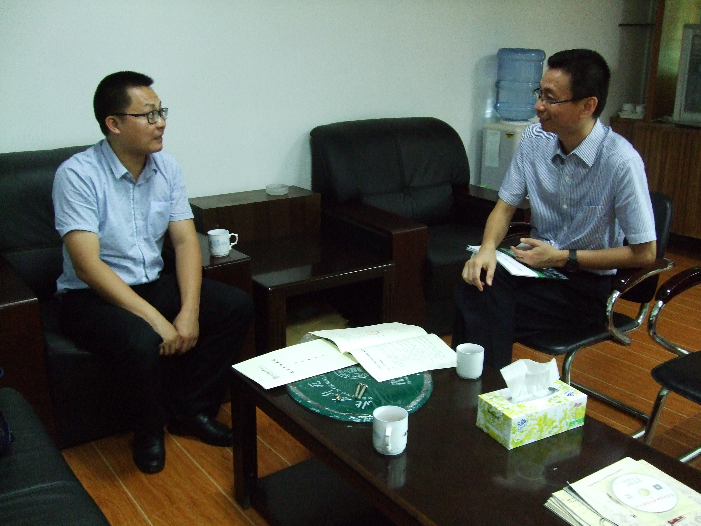
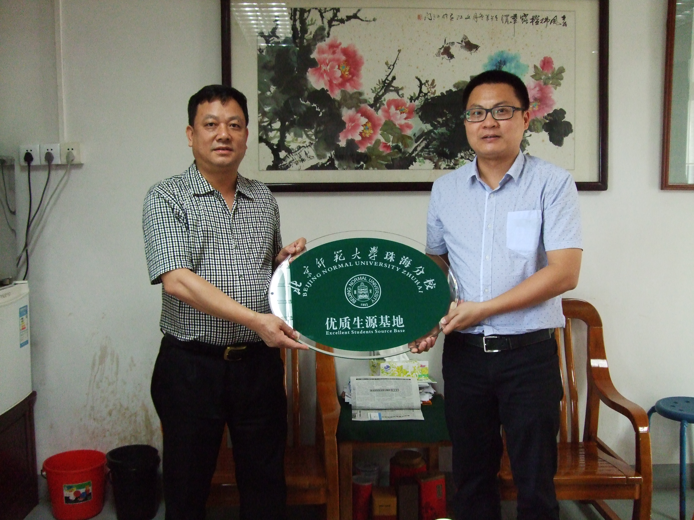
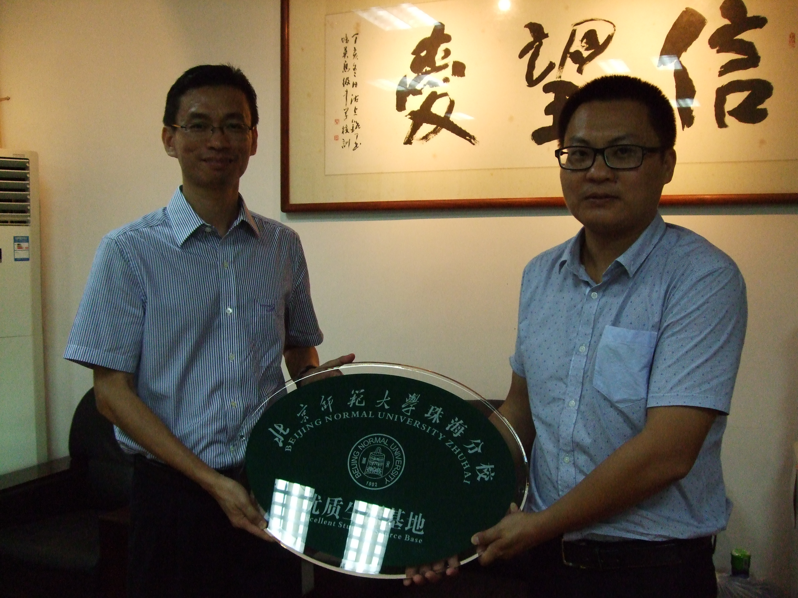

信息技术学院招生宣传组赴江门开展宣传
2015年5月15日，信息技术学院招生宣传小组在吕威副院长的带领下前往江门进行招生宣传，走访了江门市第一中学和江门市培英高级中学两所学校。宣传组分别与两所学校的领导进行了深入交流，详细介绍了我校办学环境、师资力量、教育创新、人才培养、办学特色和今年的招生专业，并详细解答了对方关心的各种问题。

（两所学校领导进行深入交流）我们在交流中了解到这两所学校历年2A线上生源比较集中，对2A批次的学校特别关注，对我校6月20日的校园开放日非常感兴趣，希望我们能制作一些宣传海报提供给高三的班主任进行宣传。两所中学的负责人均表示，将会积极协助我校做好相应的招生宣传工作，希望高考放榜之后，我校能派老师参加他们学校的家长咨询会；同时希望双方能够进一步加强沟通及交流，建立良好的合作关系。江门市第一中学校长明确表示，希望大学教授能走入中学课堂，以专家讲座等形式，在高二开展职业生涯规划教育，让高中学生生对行业-专业-职业有比较清楚的认识，尽早规划自己的职业目标，改变目前盲目填报高考志愿的现象。江门市培英高级中学对我校的艺术类招生非常关注，希望有更多的优质考生能被我校录取。两所学校负责人均对吕威教授提出的将大数据技术与基础教育相结合，应用于中学生日常行为模式与学习成绩相关度分析的思路大为赞赏，希望今后能在这方面进行深度合作。

（授牌仪式1）
（授牌仪式2）宣传小组与江门市第一中学和江门市培英高级中学签订了《北京师范大学珠海分校优质生源基地建设意向协议》，并向其授予了“优质生源基地”牌匾。